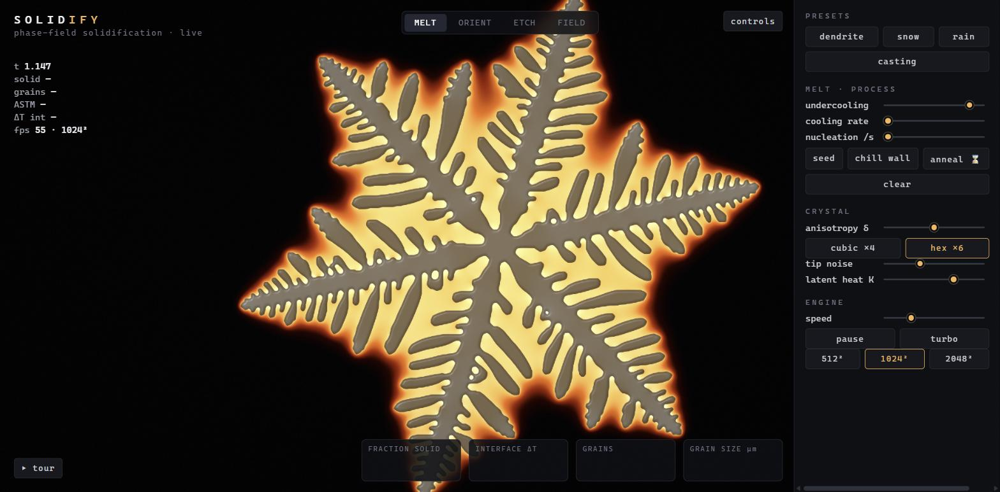
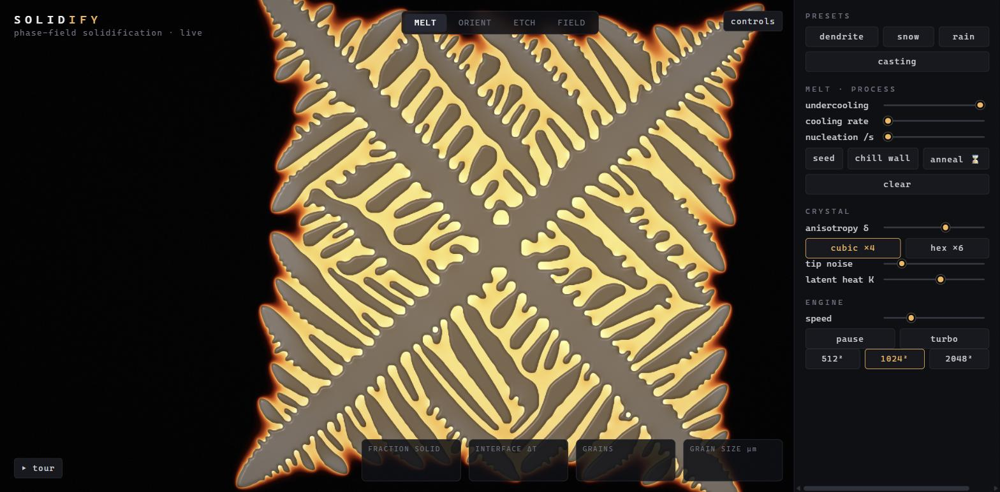

How it works
The science
The phase-field equations SOLIDIFY solves on your GPU, interactive experiments that show how each physical term shapes the microstructure, and the benchmarks that define the model's exact limits.
- Tip velocity vs. Karma–Rappel
- 1.2 %0.01679 vs. 0.0170 (2D solvability)
- 3D volumetric solver
- 192³7.1M voxels, raymarched live
- Element screening
- 70825 assessed pairs, 683 computed refusals
- Verification suite
- 47automated physics and UI scripts
01 The equations
SOLIDIFY solves the Kobayashi (1993) anisotropic phase-field model in real time on WebGPU compute shaders, extended to multiple grains and a dilute alloy solute field, alongside a quantitative Karma–Rappel thin-interface solver. On every cell of a 512²–2048² 2D grid (or up to 192³ in 3D), the GPU evolves an order parameter φ (0 = liquid, 1 = solid), temperature T, solute concentration c, solidification age, and crystallographic grain ID.
Nothing in the simulator is scripted or pre-baked: there are no drawn branch templates or particle systems. Every arm, side-branch, grain boundary, and recalescence plateau emerges directly from integrating these partial differential equations on a compact 9-point Laplacian stencil with ping-pong storage textures and GPU backpressure fencing.
Compact 9-point stencil
Naive central differences decouple checkerboard sublattices and tear the interface. SOLIDIFY uses a compact 9-point Laplacian paired with a dedicated flux texture carrying εε′φx, εε′φy, and ε².
Single-pass GPU reductions
Solid fraction, mean liquid temperature, per-grain pixel counts (ASTM E112 grain number), and virtual thermocouple probes are reduced directly on the GPU without stalling the frame loop.
02 Why dendrites grow
A flat solid front advancing into an undercooled liquid is inherently unstable: any small bump protrudes into colder liquid, sheds latent heat faster, and accelerates ahead of its neighbors. That feedback loop is the Mullins–Sekerka instability. Latent heat (K ∂φ/∂t) warms the liquid around each tip so growth self-limits to a characteristic tip radius, while crystallographic anisotropy ε(θ) locks the primary trunks onto crystal axes and thermal noise seeds side-branches.

- Anisotropy symmetry4-fold (j = 4)
- Anisotropy strength δ0.050
- Live solid fraction—
Each nucleus carries an orientation θ₀ in a grain-ID field that propagates along the moving front. When two grains meet, solidification stops and a grain boundary freezes in with no extra penalty term. Enabling growth twinning occasionally rotates a newly claimed domain by π/j in 2D (or exact Σ3 60° about ⟨111⟩ in 3D); the twin survives only if it outgrows its parent, reproducing feathery twin competition in aluminum direct-chill casting and rare 12-branched snowflakes.
03 Alloy chemistry and phase diagrams
In an alloy, growing solid rejects solute whenever the partition coefficient k < 1. Solute builds up ahead of the advancing front, depressing the local melting point and driving constitutional undercooling. The alloy composer combines textbook dilute-limit liquidus slopes mi (K/wt%) and partition coefficients ki into the two standard solidification metrics:
Because the solver carries a single solid phase field φ, SOLIDIFY pairs every alloy with a linearized binary phase diagram drawn directly from cited invariant data (table version 1.2.0, cross-checked against openly licensed CALPHAD assessments in docs/PHASE-RECONCILIATION.md). Whenever a composition crosses maximum solid solubility or reaches an invariant reaction, the composer prints what equilibrium and Gulliver–Scheil leave behind alongside the single primary phase the solver actually grows.
- Liquidus shift |ΔTL|46.2 K
- Growth restriction Q40.7 K
- Phases(Al) + (Si)
- Eutectic shareLever 49 % · Scheil 51 %
Opening the composer reveals an 18-column periodic table covering all 118 elements across the 6 base melts (6 × 118 = 708 base-element pairs). Exactly 25 are ASSESSED (backed by both a cited coefficient row and a cited invariant); the other 683 are computed refusals that explain why a pair cannot be poured, using tabulated boiling-point vapor pressures, Hume–Rothery size factors, Hägg interstitial ratios, and checked miscibility gaps.
Full chemistry screening data and calibration boundaries
Periodic table screening (6 × 118 = 708 pairs): All 118 elements are laid out in 18 columns and classified at 1 wt%, or at half their invariant composition where that is smaller (without that rule, three of the twenty-five pourable pairs, al-Ti, fe-C and mg-Zr, would refuse on open). Across the table, only 16 of the 118 elements carry a coefficient row in any base, and 47 elements are refused before the base is even consulted (including the 35 elements that are not primordial). Switching the base from aluminum to iron moves 14 of the 118 cells into a different tier and leaves 104 where they were, while a fume stripe appears under 10 more elements whose tier does not change at all (including Na, K, Ca, and Cd) because every one of their boiling points falls between aluminum's 660 °C and iron's 1538 °C (cesium boils 11 K above the aluminum melting point and calcium 54 K below the iron one). All 9 presets and all 25 legacy pairs remain bit-identical across the open periodic table.
Vapor pressure and atomic size advisories: Using Clausius–Clapeyron and Raoult's law at the pure base melting point, zinc reads 59 atm over liquid iron, magnesium 16 atm over liquid iron, mercury 39 atm over liquid aluminum, and manganese 0.037 atm over liquid iron. Evaluating at the depressed liquidus instead moves the answer by 3 % for the only assessed pair reaching the fume band (Cu–30Zn computes 1.4 atm and brass is real because zinc's activity in copper is strongly non-ideal, so vapor pressure advises rather than refuses). For interstitial atoms (C, N, B, H), Hume–Rothery's substitutional radius test returns a meaningless −39.6 % for Fe–C; SOLIDIFY screens those four elements with Hägg's interstitial criterion r/R < 0.59 instead, where Fe–C's 0.604 sits just above the limit (consistent with orthorhombic Fe3C). Five monotectic systems have been checked and refused by name (cu-Pb, al-Bi, al-In, al-Pb, fe-Ag), and all multi-solute mixes assume zero solute–solute interaction.
Phase-diagram bounds and calibrated freezing range ΔT₀: Calibration uses the poured mix's own weighted slope and partition rather than the base metal's Al–4Cu defaults (−3.4 K/wt% and 0.17). That corrects 4340 steel from 1504 K down to 78 K, puts IN718 at 65 K (published ~76 K), and puts AZ91 at 121 K (published ~130 K). When a mix crosses solid solubility (such as A356 at 7 wt% Si past Al–Si's 1.65 wt% solubility limit toward the 12.6 wt% / 577 °C eutectic), the steady-state planar reference liquid reaches 53 wt% Si, giving a 303 K model interval against 35 K of real primary freezing (a factor of 8.7). SOLIDIFY labels that state EXTRAPOLATED GAUGE and prints both numbers. Mixes whose weighted partition falls outside (0, 1) (such as A356+TiB at keff = −0.59, mixing peritectic Ti with eutectic Si) decline mix-specific calibration and fall back to the base coefficients.
Equilibrium vs. Scheil fractions: For A356 (7 wt% Si), the lever rule predicts 49 % eutectic and Gulliver–Scheil predicts 51 %. Below the solubility limit, Scheil still predicts non-equilibrium second phase: AZ91 (9 wt% Al, below Mg–Al's 12.9 wt% limit) predicts 11.9 % eutectic β-Mg17Al12, and AA2024 predicts 8.8 % eutectic Cu phase. Fractions below 1 % are suppressed because the chord partition and dilute-limit partition tables disagree by ratios from 0.68 to 3.30 across all invariant rows (and from 0.68 to 2.34 across the eutectic verification subset). For peritectics such as Fe–C (δ-ferrite limit 0.09 wt%, peritectic product 0.17 wt%, peritectic liquid 0.53 wt% at 1495 °C, slider ceiling 0.52 wt%), SOLIDIFY names the equilibrium phase (γ-austenite for 1045 steel) and refuses a single-tie-line fraction.
Methodological note on grain refinement comparisons: An early release compared grain-refined A356+TiB (normalized liquidus 0.821) against Al–1Zn (normalized liquidus 0.993) at equal bath temperature and equal elapsed time, which confounded liquidus offset and solid fraction. When controlled to equal undercooling below each alloy's own liquidus and read at matched solid fraction, growth restriction clearly slows solidification (~2× longer to reach 20 % solid), while final grain counts across both charges match within experimental scatter (within 15 % under controlled nucleation).
2D binary lamellar eutectic mode (Folch–Plapp 2005 & Jackson–Hunt 1966): While the main dendritic solver carries one solid phase field, the dedicated eutectic mode evolves a three-phase simplex (pα + pβ + pL = 1) coupled to a conserved chemical-potential solute field on WebGPU using the Folch & Plapp (2005) tilt functions (eliminating spurious third-phase intrusion at triple junctions) in a moving directional frame. Live lamellar spacing λ and front undercooling ΔT are compared directly against the Jackson & Hunt (1966) analytical curve across Al–33.2Cu, Sn–38.1Pb, Al–12.6Si, and a dimensionless symmetric reference:
2D/3D spinodal decomposition (Cahn–Hilliard 1958, Lifshitz–Slyozov 1961 & NIST PFHub Benchmark 1): The dedicated spinodal mode solves the fourth-order conserved Cahn–Hilliard PDE on a periodic domain in 2D (200² Mehrstellen 9-point isotropic Laplacian) and 3D (64³ raymarched bicontinuous sponge), implementing NIST PFHub Benchmark 1 (Jokisaari et al. 2017) alongside Fe–Cr (475 °C), Al–Zn, and off-critical droplet coarsening presets:
04 Nucleation, recalescence, and 3D casting
In a real melt, nucleation rate is not an independent dial. A foundry controls the inoculant population (nmax potential particles with Gaussian activation undercoolings N(ΔTN, ΔTσ), following Thévoz–Desbiolles–Rappaz and Greer's athermal free-growth model). Each particle fires once when the melt reaches a new maximum undercooling. The moment latent heat warms the melt back up (recalescence), undercooling drops and nucleation shuts itself off automatically.
- Peak undercooling ΔTmax0.0 K
- Activated grains (same inoculant charge)~300
Lab mode turns the sandbox into a controlled foundry pour: you set atmosphere (air, argon, vacuum), inoculant charge, pre-pour hold time (modeling TiB2/Al3Ti refiner fade), mold shape, cooling program, and an optional as-cast Hall–Petch strength target before pouring. When the casting freezes, the report card extracts thermal landmarks (TL, TN, recalescence ΔTr, TS), reconstructs solid fraction via a Newtonian zero curve, logs Sievert's dissolved hydrogen, computes the Clyne–Davies hot-tearing timing ratio, and checks the grain census against your latched specification.


The 3D solver also supports hexagonal basal/c-axis habits (plates and needles), icosahedral 5-fold interface symmetry, faceted {100} cusped growth, Bridgman directional solidification, moving Beer–Lambert laser welding, and a helical single-crystal grain selector ("pigtail") that filters dozens of chill-floor grains down to one orientation, just as industrial turbine blades are cast.
05 Quantitative calibration and benchmarks
In the default Kobayashi mode, interface width and relaxation time are visual dials: dendrite shapes are physically motivated, but tip radii cannot be tied to a material's capillary length. Switching on the calibrated solver applies Karma and Rappel's (1998) thin-interface asymptotics and Echebarria–Folch–Karma–Plapp's (2004) dilute-alloy anti-trapping formulation:
For Al–4.5Cu, this fixes d₀ = 3.2 nm, W₀ = 109 nm, and a cell pitch of 0.087 µm (an 89 µm field of view at 1024²). The coupling parameter λ is purely a numerical convergence knob setting W₀/d₀. In alloys with zero solid diffusivity, finite interface width artificially traps solute unless an anti-trapping current cancels the excess flux.
- Measured keff (true k = 0.15)0.145
- Partition bias−3.3 % vs k = 0.15
Every quantitative claim in SOLIDIFY is gated against published analytical or microscopic-solvability benchmarks:
Honest scope of 3D calibration: 3D calibrated volumes are validated against spherical Gibbs–Thomson curvature (2d₀/Δ), a planar Stefan front, closed-volume mass conservation, and a full 5-arm converged-width moving-needle study at λ = 2.8 (Δ = 0.45, ε₄ = 0.0171, up to 515×515×1166 voxels on AWS L40S): all four convergence controls pass (5×10⁻⁷ to 3.17 %) and all 5/5 arms pass the full multiplicative error + uncertainty + drift budget (≤ 10 %) against Karma & Rappel (1996) Table I numerical solvability (P = 0.324, σ* = 0.0578; width arm σ* = 0.05793 [+0.23 %], dx = 0.6 budget 2.73 % / 7.74 %). Against KR96's finite-box (200×200×400) phase-field entry σ* = 0.063 (+9.0 % above KR96's own solvability limit), budgets remain 15.9–18.0 %. Calibrated 3D alloys use an imposed temperature field with Echebarria's temperature-dependent relaxation rather than a coupled Lewis-number-matched thermal solve.
06 Solid-state heat treatment
A calibrated solidification timestep is on the order of 10⁻⁷ s, whereas a furnace anneal lasts hours (~10¹¹ timesteps). Integrating the phase-field equations through a furnace schedule is physically impossible, so SOLIDIFY runs heat treatment on a separate solid-state clock with φ frozen. You program a thermal ramp and soak in °C and hours; SOLIDIFY integrates each material's Arrhenius rate laws across the entire trajectory using Simpson quadrature (capturing ramp contributions that hold-only estimates undercount by ~31 %) and converts those integrals into GPU budgets.
Five physical mechanisms run during the furnace schedule:
- Monte Carlo Potts grain growth & Zener pinning: Sublattice GPU Potts updates coarsen grains along measured lattice exponents rather than assuming ideal parabolic m = 2 (which causes a 4.8× sweep-budget error). Adding a second-phase particle dispersion pins boundaries at the lattice-measured limit dlim = 7.24 · r0.205 / f0.356 cells in 2D.
- Annealing twins (3D): Controlled by published stacking-fault energies (Murr 1975). Low-SFE copper (78 mJ/m²) and cobalt (~20 mJ/m²) form Σ3 twins; high-SFE aluminum (166 mJ/m²) and nickel (128 mJ/m²) do not, and BCC δ-ferrite steel refuses structurally. Because a single-voxel twin faces an artificial 12-neighbor lattice nucleation barrier, births are inserted as {111} plates in exact Σ3 registry; survival is governed purely by a coherent energy cusp (24 vs. 625 mJ/m²) and mobility gate.
- Solute homogenization & surface scaling: Masked solid-state diffusion smooths interdendritic segregation (verified against exact discrete stencil eigenvalues to 9×10⁻⁷ relative error in 2D and 3D). Parabolic oxide scale x = √(∫ kp dt) and steel decarburization x = 2√(DC t) appear as analytical report-card rows rather than painted fields.
- Cold work, recovery, and recrystallization (3D): A per-grain stored-energy buffer H(id) drives strain-induced boundary migration via ΔE = enew − enow + (Hcand − Hmine), coupled to exact second-order dislocation recovery HS = H₀ / (1 + 10⁻³ S H₀) evaluated analytically in the shader. Optional strain-free nuclei (simultaneous, constant-rate, or grain-boundary sites) grow into high-energy deformed grains.
- Precipitation age-hardening (opt-in T6): Integrates Shercliff & Ashby's (1990) temperature-corrected kinetic parameter P = ∫ (dt / T) exp(−QA / RT) across the ramp and hold for three cited aluminum systems: Al–Cu (Tsolvus = 505 °C), A356 Al–Si–Mg (515 °C), and AA2024 Al–Cu–Mg (495 °C), all at QA = 130 kJ/mol. Solid-solution depletion Δσss = Δσss,0 exp(−2P̄/3) and Friedel/Orowan precipitation Δσppt = 2 Δσpeak √P̄ / (1 + P̄) peak at P̄ = 1 (T6) and decay on overaging (T7); holding at or above Tsolvus redissolves precipitates into solutionized T4. Non-age-hardenable alloys are refused explicitly.
On a 26-neighbor cubic lattice, advancing a flat {100} boundary swaps 9 unlike neighbors for 17, giving a theoretical flat-face barrier of ΔH = 8 Jb. Measured boundary velocity turns on near 5–6 Jb because moving fronts form kinks with lower local barriers, brackets 9/26 = 0.346 cells/sweep near ΔH = 8, and stalls cleanly inside the immobile band as second-order recovery decays HS.
- Arrhenius ramp quadrature3×10⁻⁸ err
- Homogenization eigenmode9×10⁻⁷ err
- 2D anneal end-to-end (Al, 12 h)48.6 vs 50.4 µm
- Cold-work volume selection+0.495 vs ±0.007
Stored-energy caveats and recrystallization clock boundaries
Because the solver carries grain orientations without crystal slip systems, per-grain stored energy is distributed via a deterministic hash (a declared heterogeneity fabric rather than a Taylor-factor mechanics solve). When cold work is dialed above zero, the curvature-only d̄ law prediction is withdrawn on the report card and Σ3 twin nucleation is held back so newly allocated twin IDs do not inherit unrelated stored-energy values. Recrystallization kinetics run on the Monte Carlo sweep clock bought by the grain-growth Arrhenius integral; the fitted Avrami exponent on the card is a sweep-clock exponent rather than a real-time exponent.
07 What is quantitative, mechanistic, or not modeled
Every number SOLIDIFY prints is computed from the running state or a cited material table; stylistic choices and unmodeled physics are labeled explicitly. Filter the model boundary register below:
Guided labs · in-app tracker
Use SOLIDIFY in an undergraduate MSE course
Nine interactive labs run directly inside the instrument with live physics checks, auto-captured comparison tables, printable reports, and reproducible Run-Export ZIP archives, paired with course worksheets and an instructor answer key.
- 01 Dendrites, Symmetry & Calibration Start
- 02 Alloys, Screening & Scheil Start
- 03 3D Casting, Cooling & Niyama Start
- 04 Heat Treat & Hall–Petch Specs Start
- 05 Cold Work, Recovery & Recrystallization Start
- 06 Directional Growth, Melt Flow & Selection Start
- 07 Inverse Process Design & Optimization Start
- 08 Binary Eutectic Lamellar Growth & Jackson–Hunt Scaling Start
- 09 Spinodal Decomposition, Lyapunov Decay & 3D Coarsening Start
08 References
- R. Kobayashi, "Modeling and numerical simulations of dendritic crystal growth," Physica D 63 (1993) 410–423.
- A. Karma & W.-J. Rappel, "Quantitative phase-field modeling of dendritic growth in two and three dimensions," Phys. Rev. E 57 (1998) 4323–4349.
- B. Echebarria, R. Folch, A. Karma & M. Plapp, "Quantitative phase-field model of alloy solidification," Phys. Rev. E 70 (2004) 061604.
- A. Karma, "Phase-field formulation for quantitative modeling of alloy solidification," Phys. Rev. Lett. 87 (2001) 115701.
- X. Tong, C. Beckermann, A. Karma & Q. Li, "Phase-field simulations of dendritic crystal growth in a forced flow," Phys. Rev. E 63 (2001) 061601.
- J.A. Warren & W.J. Boettinger, "Prediction of dendritic growth and microsegregation patterns in a binary alloy using the phase-field method," Acta Metall. Mater. 43 (1995) 689–703.
- W.W. Mullins & R.F. Sekerka, "Stability of a planar interface during solidification of a dilute binary alloy," J. Appl. Phys. 35 (1964) 444–451.
- Ph. Thévoz, J.L. Desbiolles & M. Rappaz, "Modeling of equiaxed microstructure formation in casting," Metall. Trans. A 20 (1989) 311–322.
- Ch.-A. Gandin & M. Rappaz, "A coupled finite element–cellular automaton model for the prediction of dendritic grain structures in solidification processes," Acta Metall. Mater. 42 (1994) 2233–2246.
- A.L. Greer, A.M. Bunn, A. Tronche, P.V. Evans & D.J. Bristow, "Modelling of inoculation of metallic melts: application to grain refinement of aluminium by Al–Ti–B," Acta Mater. 48 (2000) 2823–2835.
- M. Easton & D. StJohn, "Grain refinement of aluminum alloys," Metall. Mater. Trans. A 30 (1999) 1613–1633.
- J.A. Dantzig & M. Rappaz, Solidification, EPFL Press (2009).
- W. Kurz & D.J. Fisher, Fundamentals of Solidification, Trans Tech Publications (1998).
- E. Scheil, "Bemerkungen zur Schichtkristallbildung," Z. Metallkd. 34 (1942) 70–72.
- K.A. Jackson & J.D. Hunt, "Lamellar and rod eutectic growth," Trans. Metall. Soc. AIME 236 (1966) 1129–1142.
- R. Folch & M. Plapp, "Quantitative phase-field modeling of two-phase growth," Phys. Rev. E 72 (2005) 011602.
- J.W. Cahn & J.E. Hilliard, "Free energy of a nonuniform system. I. Interfacial free energy," J. Chem. Phys. 28 (1958) 258–267.
- I.M. Lifshitz & V.V. Slyozov, "The kinetics of precipitation from supersaturated solid solutions," J. Phys. Chem. Solids 19 (1961) 35–50.
- A.M. Jokisaari, P.W. Voorhees, J.E. Guyer, J. Warren & O.G. Heinonen, "Benchmark problems for numerical implementations of phase field models," Comput. Mater. Sci. 126 (2017) 139–151.
- E. Niyama, T. Uchida, M. Morikawa & S. Saito, "A method of shrinkage prediction and its application to steel casting practice," AFS Int. Cast Metals J. 7 (1982) 52–63.
- T.W. Clyne & G.J. Davies, "The influence of composition on solidification cracking susceptibility in binary alloy systems," Br. Foundryman 74 (1981) 65–73.
- E. Fras, W. Kapturkiewicz, A. Burbielko & H.F. Lopez, "A new concept in thermal analysis of castings," AFS Trans. 101 (1993) 505–511.
- D.M. Stefanescu, "Thermal analysis: theory and applications in metalcasting," Int. J. Metalcast. 9 (2015) 7–22.
- J. Campbell, Castings, Butterworth-Heinemann (2003).
- C.E. Ransley & H. Neufeld, "The solubility of hydrogen in liquid and solid aluminium," J. Inst. Metals 74 (1948) 599–620.
- J.E. Burke & D. Turnbull, "Recrystallization and grain growth," Prog. Met. Phys. 3 (1952) 220–292.
- M.P. Anderson, D.J. Srolovitz, G.S. Grest & P.S. Sahni, "Computer simulation of grain growth, I. Kinetics," Acta Metall. 32 (1984) 783–791.
- L.E. Murr, Interfacial Phenomena in Metals and Alloys, Addison-Wesley (1975).
- E.O. Hall, "The deformation and ageing of mild steel: III," Proc. Phys. Soc. B 64 (1951) 747–753; N.J. Petch, J. Iron Steel Inst. 174 (1953) 25–28.
- C. Wagner, "Beitrag zur Theorie des Anlaufvorgangs," Z. Phys. Chem. B 21 (1933) 25–41.
- H.R. Shercliff & M.F. Ashby, "A process model for age hardening of aluminum alloys: I. The model," Acta Metall. Mater. 38 (1990) 1789–1802.
- ASTM E112, Standard Test Methods for Determining Average Grain Size.